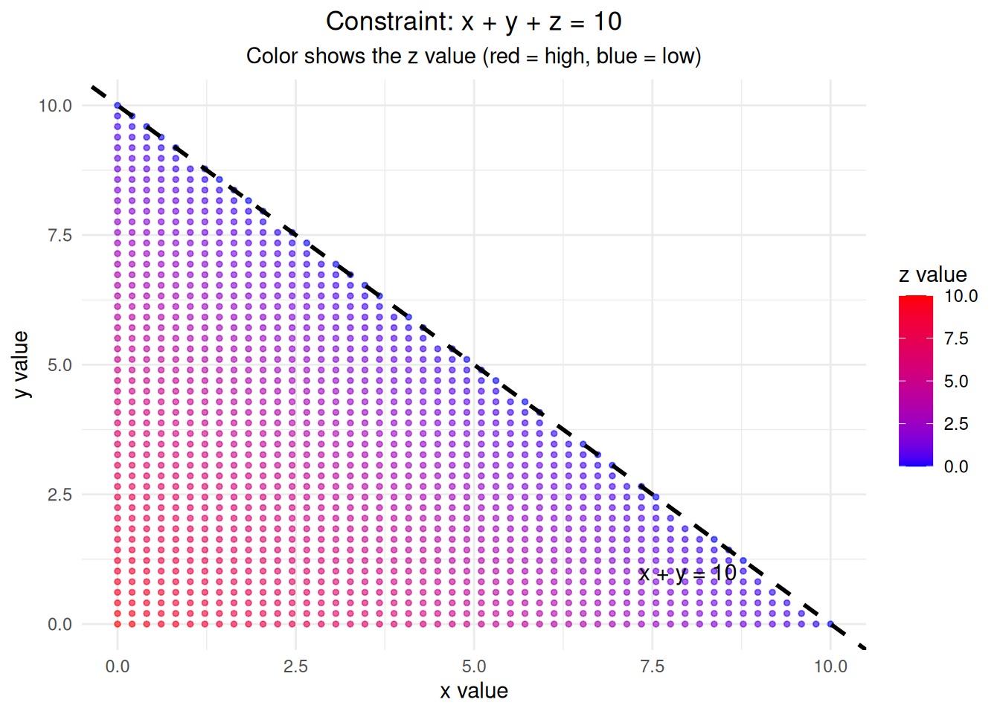
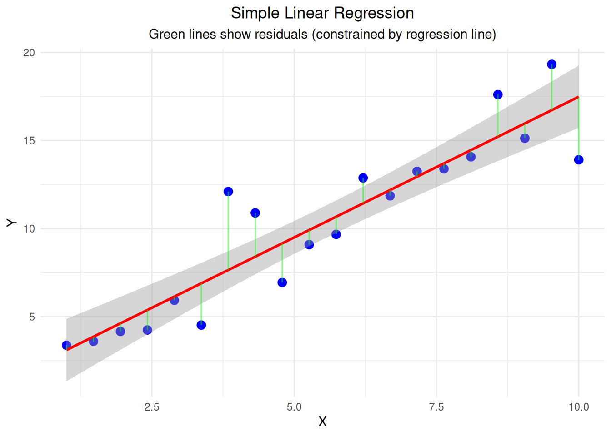

Building an Intuition for Understanding Degrees of Freedom
Introduction
Degrees of freedom (df) is one of the most confusing concepts in statistics, yet it’s fundamental to understanding statistical inference.
What Are Degrees of Freedom?
Degrees of freedom represent the number of independent pieces of information available to estimate a parameter or test a hypothesis. Think of it as the number of “free choices” you have after accounting for constraints.
Vector Examples
The Intuition: The “Free to Vary” Concept
Simple Example: Three Numbers That Sum to 10
Let’s start with a simple example to build intuition:
Show the code
# Check and install required packagesrequired_packages <-c("ggplot2", "dplyr")# Function to install packages if not already installedinstall_if_missing <-function(packages) {for(pkg in packages) {if(!require(pkg, character.only =TRUE, quietly =TRUE)) {install.packages(pkg, dependencies =TRUE)library(pkg, character.only =TRUE) } else {library(pkg, character.only =TRUE) } }}# Install and load packagesinstall_if_missing(required_packages)# Set seed for reproducibilityset.seed(123)
Show the code
# Example: Three numbers that sum to 10cat("Constraint: x + y + z = 10\n\n")
Constraint: x + y + z = 10
Show the code
# If we know two numbers, the third is determinedx <-3y <-4z <-10- x - y # z is NOT free to varycat("If x =", x, "and y =", y, "then z MUST be", z, "\n")
If x = 3 and y = 4 then z MUST be 3
Show the code
cat("Degrees of freedom = 2 (only x and y are free to vary)\n")
Degrees of freedom = 2 (only x and y are free to vary)
Visualizing the Constraint
Show the code
# Create a 2D visualization of the constraint x + y + z = 10# We'll show how z is determined by x and y# Generate points on the constraint planex_vals <-seq(0, 10, length.out =50)y_vals <-seq(0, 10, length.out =50)# Create grid of x and y valuesgrid_data <-expand.grid(x = x_vals, y = y_vals)grid_data$z <-10- grid_data$x - grid_data$y# Filter valid points (all coordinates >= 0)valid_points <- grid_data[grid_data$z >=0, ]# Create 2D plot showing the constraintggplot(valid_points, aes(x = x, y = y, color = z)) +geom_point(size =1, alpha =0.6) +scale_color_gradient(low ="blue", high ="red", name ="z value") +labs(title ="Constraint: x + y + z = 10",subtitle ="Color shows the z value (red = high, blue = low)",x ="x value", y ="y value") +theme_minimal() +theme(plot.title =element_text(hjust =0.5),plot.subtitle =element_text(hjust =0.5)) +geom_abline(intercept =10, slope =-1, color ="black", linewidth =1, linetype ="dashed") +annotate("text", x =8, y =1, label ="x + y = 10", color ="black", size =4)

Degrees of Freedom in Sample Variance
The Key Insight: Sample Mean Constrains the Data
When we calculate sample variance, we use the sample mean as an estimate of the population mean. This creates a constraint that reduces our degrees of freedom.
# Create regression plotdf_reg <-data.frame(x = x_reg, y = y_reg)ggplot(df_reg, aes(x = x, y = y)) +geom_point(size =3, color ="blue") +geom_smooth(method ="lm", color ="red", linewidth =1) +geom_segment(aes(xend = x, yend =fitted(lm_model)), color ="green", alpha =0.5) +labs(title ="Simple Linear Regression",subtitle ="Green lines show residuals (constrained by regression line)",x ="X", y ="Y") +theme_minimal() +theme(plot.title =element_text(hjust =0.5),plot.subtitle =element_text(hjust =0.5))

Interactive Example: Degrees of Freedom Calculator
Show the code
# Function to demonstrate degrees of freedomdemonstrate_df <-function(n, constraint_type ="mean") {if(constraint_type =="mean") {# Generate n random numbers data <-rnorm(n, mean =10, sd =2)# Show how the last value is constrainedif(n >1) { known_values <- data[1:(n-1)] target_mean <-mean(data) last_value <- n * target_mean -sum(known_values)cat("Degrees of Freedom Demonstration:\n")cat("Sample size:", n, "\n")cat("Constraint: Sample mean =", round(target_mean, 2), "\n")cat("Known values:", paste(round(known_values, 2), collapse =", "), "\n")cat("Last value MUST be:", round(last_value, 2), "\n")cat("Degrees of freedom =", n -1, "\n") } }}# Demonstrate with different sample sizesdemonstrate_df(5, "mean")
Degrees of Freedom Demonstration:
Sample size: 5
Constraint: Sample mean = 10.32
Known values: 11.17, 10.25, 10.43, 10.76
Last value MUST be: 9
Degrees of freedom = 4
Show the code
cat("\n")
Show the code
demonstrate_df(10, "mean")
Degrees of Freedom Demonstration:
Sample size: 10
Constraint: Sample mean = 9.71
Known values: 9.33, 7.96, 7.86, 10.61, 10.9, 10.11, 11.84, 14.1, 9.02
Last value MUST be: 5.38
Degrees of freedom = 9
Key Takeaways
Why Degrees of Freedom Matter:
Corrects for bias: Using n-1 instead of n in sample variance gives an unbiased estimate
Accounts for constraints: Each constraint reduces the number of independent pieces of information
Affects statistical tests: Different degrees of freedom lead to different critical values
Determines distribution shape: Higher degrees of freedom make distributions more normal
Common Rules:
Sample variance: df = n - 1
One-sample t-test: df = n - 1
Two-sample t-test: df = n₁ + n₂ - 2
Chi-square goodness of fit: df = k - 1 (k categories)
Simple linear regression: df_residual = n - 2
The Intuition:
Think of degrees of freedom as the number of “free choices” you have after accounting for the constraints imposed by your statistical procedure. Each constraint reduces your degrees of freedom by one.